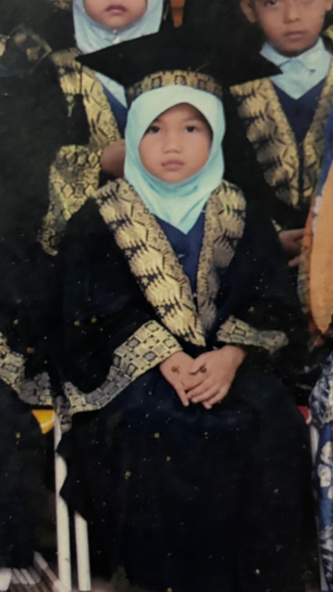
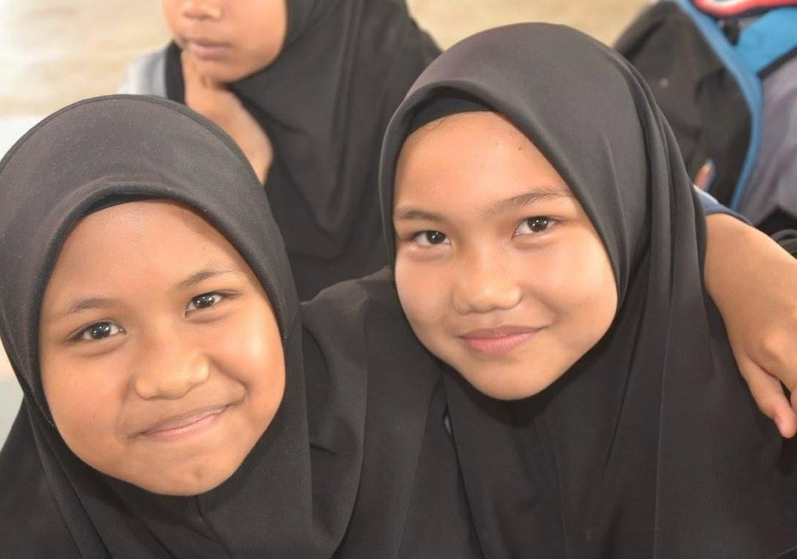
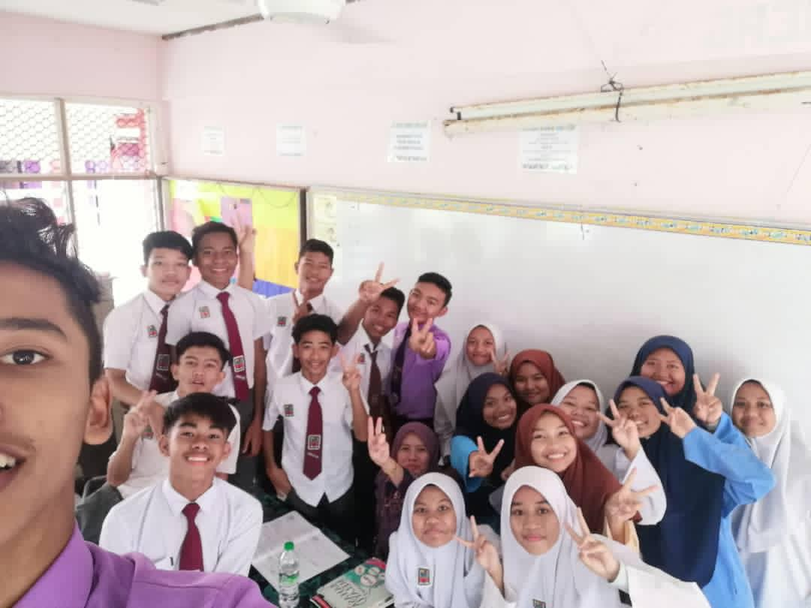
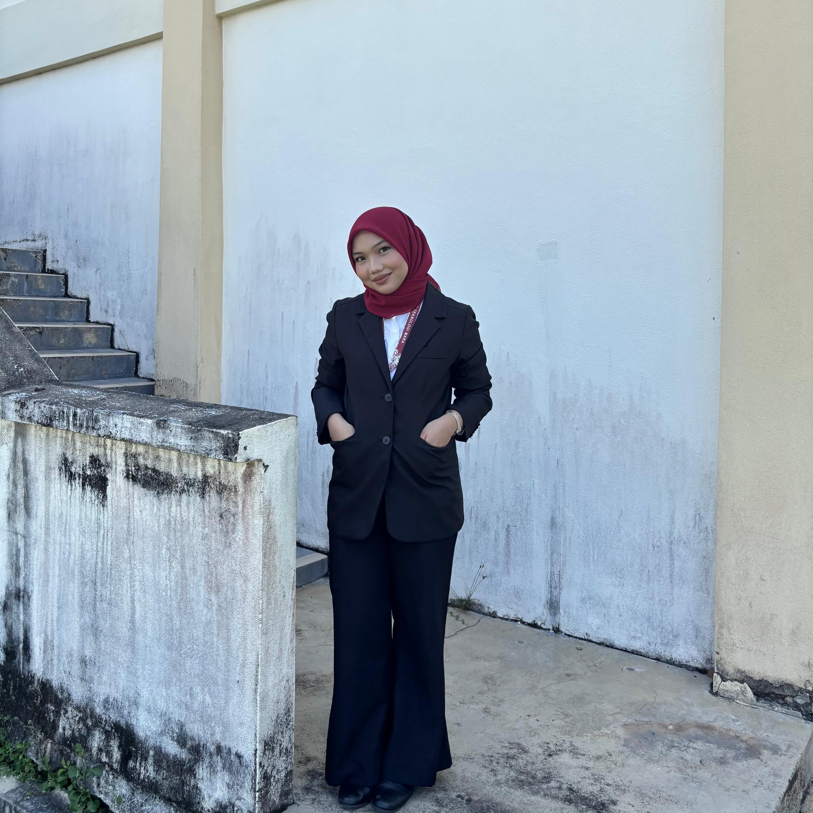

My Little Learning Story 🌸

🧸 Kindergarten
This is where everything started. A small world full of colours, ABC song, snacks, and my first friends. The place that shaped my earliest memories.

🌼 Preschool
I became more independent, more confident, more curious. I enjoyed art, singing, simple activities, and learning little by little every day.

📘 Primary School
These years taught me friendship, discipline, teamwork, and fun memories. I learned so much about myself and the world.

📚 Secondary School
This phase shaped my personality the most. Challenges, achievements, growth — all happened here. I learned to be stronger and more mature.

🎓 Diploma in Information Management
My current journey! Learning new skills, meeting amazing people, and preparing for my future. This is a chapter I’m truly proud of.